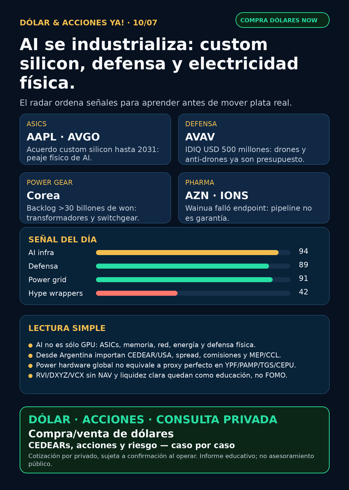

AI se industrializa.
Custom ASICs, defensa real y electricidad física: research educativo para Argentina, no orden de compra.
Texto WhatsApp
Placa del día

Dólar & Acciones YA — 10/07
Lectura simple del día
La señal de hoy es que AI se está industrializando. No alcanza con mirar una sola acción de GPU: el dinero grande también pasa por chips a medida, networking, memoria, energía física, transformadores, switchgear, defensa y software de inferencia.
En criollo: si una empresa dice “AI”, la pregunta es qué peaje cobra. Puede cobrar por fabricar el chip, diseñar silicon a medida, mover datos más rápido, alimentar el data center, defender infraestructura crítica o empaquetar acceso a empresas privadas. Cada peaje tiene riesgo distinto.
Para Argentina hay otra capa: buena empresa afuera ≠ buen instrumento local. Antes de hablar de ejecución real hay que mirar CEDEAR o acción directa USA, liquidez, spread, comisiones, CCL/MEP, ratio, broker y tamaño prudente.
Contexto dólar para lectores argentinos, tomado de fuentes públicas durante la mañana: BlueLytics: oficial vendedor ARS 1.513,00, blue vendedor ARS 1.515,00; timestamp 2026-07-10 08:46 ART. CriptoYa: MEP AL30 24hs ARS 1.529,66 (ts 2026-07-09 16:59 ART), CCL AL30 24hs ARS 1.597,85 (ts 2026-07-09 16:59 ART), USDT cripto ask ARS 1.571,19 (ts 2026-07-10 08:48 ART). Si MEP/CCL llegan con timestamp de cierre previo, se usan como referencia educativa, no como precio vivo de broker.
Esto está ordenado por valor educativo y fuerza de señal de radar, no por recomendación de compra.
Tesis central
El AI trade físico se está ensanchando: custom silicon + defensa física + power hardware. Broadcom confirmó acuerdos con Apple hasta 2031 para custom ASICs; AeroVironment mostró que counter-UAS ya no es nicho; y Corea sigue apareciendo como parte del cuello de botella de electricidad física para data centers.
La lectura para una decisión humana: buena empresa ≠ buena inversión al precio actual ≠ buen instrumento para Argentina ≠ buen tamaño dentro de una cartera.
Señales educativas del día
1) Broadcom + Apple — custom silicon como peaje de AI
- Empresa/ticker: Broadcom /
AVGO; Apple /AAPL. - Qué pasó: Broadcom presentó 8-K confirmando acuerdos multianuales con Apple para desarrollar y suministrar custom ASIC silicon para múltiples generaciones de productos Apple hasta 2031. CNBC agregó que el acuerdo esperado supera USD 30.000 millones, con más de 15.000 millones de chips fabricados en Estados Unidos y expansión en Fort Collins.
- Fuentes: SEC 8-K https://www.sec.gov/Archives/edgar/data/1730168/000119312526295589/d84378d8k.htm ; CNBC https://www.cnbc.com/2026/07/08/apple-commits-30-billion-to-broadcom-for-us-chipmaking-push.html
- Lectura en criollo: AI no es sólo GPU estándar. También son ASICs, chips a medida, networking y contratos largos con clientes gigantes.
- Accionable local Argentina:
AAPLsuele tener vía CEDEAR;AVGOrequiere verificar disponibilidad real, liquidez, spread y ratio en el broker. Internacional/global: acción directa Nasdaq. No es recomendación personalizada. - Estado: señal fortalecida para
AVGO;AAPLqueda en vigilancia por estrategia de silicon, no como AI moat automático.
2) AeroVironment — defensa real, drones y counter-UAS
- Empresa/ticker: AeroVironment /
AVAV. - Qué pasó: AVAV anunció IDIQ de tres años por USD 500 millones para JIATF-401 Domestic Shield, con sistemas C-UAS/C-sUAS para force protection, base defense y critical infrastructure.
- Fuente primaria: https://www.avinc.com/2026/07/06/av-awarded-500-million-idiq-for-support-of-jiatf-401-domestic-shield-program/
- Lectura en criollo: drones y anti-drones dejaron de ser video futurista. Están entrando a presupuestos grandes de defensa e infraestructura crítica.
- Riesgo: AVAV es high-beta: integración BlueHalo, execution risk, valuación y debilidades contables/material weaknesses previas siguen bajo lupa.
- Accionable local Argentina: acceso USA directo; CEDEAR no confirmado. Para Argentina, no asumir operabilidad sin verificar instrumento, spread y liquidez.
- Estado: señal fortalecida / en radar defensa, no orden de compra.
3) Power hardware Corea — el segundo peaje de AI
- Empresas/tickers: HD Hyundai Electric /
267260.KS; Hyosung Heavy Industries /298040.KS; LS Electric. - Qué pasó: BusinessKorea reportó backlog combinado superior a 30 billones de won en Hyosung, HD Hyundai Electric y LS Electric. HD Hyundai Electric habría conseguido una orden de alrededor de 1,12 billones de won para data center de una big tech norteamericana y subió su target anual de órdenes 22,8% a USD 5.185 millones.
- Fuente secundaria verificada: https://www.businesskorea.co.kr/news/articleView.html?idxno=272762
- Lectura en criollo: el segundo peaje de AI es electricidad física: transformadores, switchgear, distribución, subestaciones, lead times y equipos que no se escalan con un click.
- Accionable local Argentina: Corea/OTC no es fácil para todos.
GEV, Siemens Energy (ENR.DE) o Hitachi/Hitachi Energy pueden ser proxies globales más limpios, pero hay que verificar instrumento.YPF,PAMP,TGSyCEPUsirven para aprender energía local, no como proxy perfecto de data centers de Estados Unidos. - Estado: señal fortalecida para el lane; fuente secundaria, seguir buscando primaria/IR.
4) Qualcomm — inferencia y memory wall
- Empresa/ticker: Qualcomm /
QCOM. - Qué pasó: Qualcomm publicó una tesis técnica sobre High Bandwidth Compute / near-memory computing: el cuello de botella de AI inference pasa de sólo compute a mover datos. Reuters/AOL vía Google News reportó forecast de USD 15.000 millones en ventas de chips data-center para 2029.
- Fuentes: Qualcomm https://www.qualcomm.com/news/onq/2026/07/qualcomm-hbc-near-memory-computing ; Reuters/AOL vía Google News https://news.google.com/rss/articles/CBMifEFVX3lxTE50UDljVGlSN084X29mbDRWRGx1T05aSTlsU2FXaUdGVWtRdkgwRzZtYzlZS0tZZF8wdTNJOERYSHptTWpZSExZN0t1OE5YRzBUTjRQRThJLVc1MXhwcEJRSjlESEJva2JUYlUySFBEWHFwN1NXRmc2V1FmeGM?oc=5
- Lectura:
QCOMentra como candidato de radar en AI inference/edge-to-cloud. No reemplaza a NVIDIA; puede ser carril de eficiencia y costo. - Accionable local Argentina: acceso USA directo; CEDEAR/disponibilidad local a verificar.
- Estado: vigilar / radar externo.
5) Pharma — AstraZeneca/Ionis recuerda que pipeline no es garantía
- Empresas/tickers: AstraZeneca /
AZN; Ionis /IONS. - Qué pasó: CARDIO-TTRansform Phase III de Wainua/eplontersen en ATTR-CM no alcanzó el endpoint primario compuesto hasta 140 semanas vs placebo.
- Fuente primaria: SEC 6-K AZN https://www.sec.gov/Archives/edgar/data/901832/000165495426006554/a6054l.htm
- Lectura en criollo: una farmacéutica puede tener negocios fuertes y, al mismo tiempo, fallar en un programa concreto. Pipeline no es garantía.
- Estado: debilita tesis específica; no invalida todo
AZN, pero sube vigilancia sobre pipeline cardio/rare disease.
6) Bloom Energy — AI power con riesgo de short report
- Empresa/ticker: Bloom Energy /
BE. - Qué pasó: Bloom presentó 8-K rechazando claims de Hunterbrook Media sobre resultados/accounting y suministro de scandium oxide. Dice tener supply suficiente para demanda/backlog actual y capacidad para soportar 25GW/año de fuel cells.
- Fuente primaria: SEC 8-K https://www.sec.gov/Archives/edgar/data/1664703/000162828026047734/be-20260709.htm
- Lectura: AI power puede ser enorme, pero no todo lo que se beneficia de data centers es limpio. Supply chain, accounting, clientes y márgenes importan.
- Estado: vigilar / riesgo subió; no tomar el comunicado de la empresa como absolución automática.
7) Rocket Lab — space vigente, pero con overhang táctico
- Empresa/ticker: Rocket Lab /
RKLB. - Qué pasó: Form 4 muestra venta automática bajo plan 10b5-1 de Peter Beck/Equatorial Trust: 3.275.779 acciones, proceeds aprox. USD 286,4 millones, VWAP aprox. USD 87,43.
- Fuente primaria: SEC Form 4 XML https://www.sec.gov/Archives/edgar/data/1819994/000200101126000109/edgardoc.xml
- Lectura: una venta 10b5-1 no rompe sola la tesis, pero después de la adquisición de Iridium agrega ruido: deuda, integración, aprobaciones y posible presión técnica.
- Accionable local Argentina: no asumir instrumento local. Verificar broker, spread, liquidez y CCL/MEP.
- Estado: vigilar / riesgo táctico.
Watchlist base — seguimiento rápido
- RKLB: señal táctica mixta por venta 10b5-1 de Peter Beck; tesis space sigue en radar.
- NVDA: sin señal primaria nueva superior hoy; moat estructural sigue por GPUs, networking, software y liquid cooling de señales previas.
- PLTR: revisado; sin señal operativa nueva fuerte.
- TSM: vigilar próximo meeting/resultados; claims de capex 2027 altos quedan secundarios hasta primaria TSMC.
- MU: HBM/memoria sigue tesis estructural; sin novedad primaria fresca hoy.
- GOOGL/GOOG: cloud/TPU/data centers siguen estructurales; sin señal primaria nueva fuerte hoy.
- AAPL: fortalecida por custom silicon con Broadcom; no vender como AI moat automático sin monetización/producto.
- HOOD: sin producto nuevo fuerte hoy;
RVI/sponsor sales siguen como riesgo de wrappers privados. - TSLA: Q2 deliveries/storage de jornadas previas sigue en radar; sin primaria nueva superior hoy.
- ASML: moat EUV/High-NA vigente;
ASML sí / all-in no. - Gold / GLD / GOLD / B: instrumento ambiguo; no reportar precio ni tesis sin ticker exacto.
- RVI: Form 4 de Robinhood Markets vendió 21.294 shares por aprox. USD 689.800; señal de liquidez/float/sponsor sales, no oportunidad.
- AVGO: señal fuerte por Apple/custom ASICs hasta 2031.
- AVAV: señal fuerte defensa/counter-UAS por IDIQ USD 500 millones.
Energía y capa Argentina
- AI power global: carril fuerte. Incluye generación onsite, gas/nuclear, fuel cells, storage, transmisión, subestaciones, transformadores, switchgear, UPS y power quality.
- Transformadores/power hardware: revisados
GEV, Siemens Energy (ENR.DE), Hitachi/Hitachi Energy (6501.T/HTHIY), HD Hyundai Electric (267260.KS), Hyosung (298040.KS), Virginia Transformer y Delta Star. Señal más visible hoy: Corea por BusinessKorea; Hitachi South Boston queda a auditar con primaria. - Argentina:
YPF,PAMP,TGS,CEPUrevisadas como radar educativo local de gas, generación, tarifas, deuda y regulación. No son proxy perfecto de AI data centers de Estados Unidos. - En criollo: capex = inversión pesada para construir infraestructura. Puede ser oportunidad si hay demanda y contratos; también riesgo si hay deuda, permisos, demoras o regulación.
Pharma/salud
- AZN/IONS: señal negativa verificable en Wainua/eplontersen ATTR-CM.
- NVO: buyback reciente es retorno de capital, no catalyst clínico.
- LLY/orforglipron/Foundayo: claims reciclados de “FDA approved oral pill” quedan fuera como novedad sin FDA/company primary fresca.
- Estado: pharma revisada; no fabricar titular GLP-1 si la fuente primaria no está.
Defensa, space, autonomía y crypto gobernado
- Defensa/guerra física:
AVAV,GE,RTX,LMT,NOC,GD,HWM,KTOS,BA,ITA/XARrevisados. Titular fuerte: AVAV/Domestic Shield. GE Aerospace y primes quedan en radar estructural si aparece fuente primaria nueva. - Space/orbital AI:
RKLBySPCXrevisados. RKLB trae riesgo táctico; SpaceX/SPCX sigue central por filings/eventos previos, pero no se asume acceso local automático. - Autonomous mobility / physical AI: TSLA, Waymo/Alphabet, Uber, Zoox/Amazon y Joby revisados sin señal primaria nueva fuerte hoy.
- Crypto gobernado: sin token nuevo para elevar. Sólo infraestructura, stablecoins/proxies regulados y alertas de riesgo; nada de casino de tokens.
Private markets / wrappers
- RVI: ventas del sponsor por Form 4. Antes de hablar como instrumento hay que mirar NAV, premium/descuento, holdings, liquidez y acceso Argentina/USA.
- DXYZ/VCX/ARKVX/AGIX/XOVR/FAPMI/Forge: aparecieron en ruido o quedaron sin filing/fact sheet fresco. No elevar como oportunidad.
- Regla: wrapper privado con SpaceX/OpenAI/Anthropic no es acceso limpio si no sabemos NAV, premium, holdings y liquidez.
Red flags / hype para ignorar
- Decir “Apple + AI” como compra automática sin mirar monetización, proveedor real, valuación e instrumento.
- Comprar narrativa de “AI power” sin leer deuda, supply chain, accounting y contrato real.
- Perseguir
RVI,DXYZoVCXpor FOMO sin NAV/premium/holdings. - Tomar una venta 10b5-1 como tesis rota o ignorarla por fanatismo.
- Publicar pharma desde RSS bloqueado como si fuera fuente primaria.
- Hablar de Gold/GLD/GOLD/B sin instrumento exacto.
Qué mirar después
AVGO/Apple: próximos filings, concentración, margen y vínculo real con productos AI.AVAV: delivery orders concretas del IDIQ, backlog, integración BlueHalo y márgenes.- Power hardware: primarias de HD Hyundai/Hyosung/Hitachi/GEV/Siemens Energy y nuevos orders/backlog.
QCOM: clientes reales, revenue de data-center chips, márgenes y productos.BE: contrastar short report vs 10-K/10-Q y clientes/backlog.- Pharma: fuentes primarias para GLP-1 oral y oncology.
- Argentina: precio vivo, MEP/CCL, spreads y liquidez antes de cualquier ejecución.
Servicio privado
Dólar · CEDEARs · acciones · consulta privada. Si querés comprar o vender dólares, invertir en acciones o pensar una estrategia financiera más personalizada, escribime por privado y lo vemos caso por caso. Cotización sujeta a confirmación al momento de operar.
Disclaimer
Esto es research educativo y editorial, no asesoramiento financiero personalizado. Buena empresa ≠ buena inversión al precio actual ≠ buen instrumento para Argentina ≠ buen tamaño dentro de una cartera.